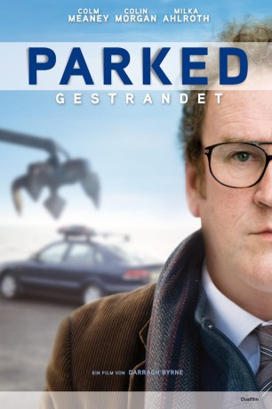

#12206 Parked - Gestrandet
Alternativ: Parked (Englischer Titel)
 
 IMDB-Wertung: 6.7 / 10
IMDB-Wertung: 6.7 / 10  Tomatometer: 64
Tomatometer: 64  Metascore: 47
Metascore: 47 
Ein arbeitsloser Uhrmacher kehrt mit Ende 50 aus England in seine Heimat Irland zurück. Das Elternhaus ist verkauft, ohne festen Wohnsitz erhält er keine Sozialhilfe und ohne die gibt es auch keine Wohnung. Ein Teufelskreis. Also haust er im alten Mazda auf dem Parkplatz an der Dubliner Küste und freundet sich mit seinem "Nachbarn" an, einem jungen Drogensüchtigen. Die beiden schöpfen ein bisschen Hoffnung in einer hoffnungslosen Welt, der Ältere entdeckt sogar längst vergessene Gefühle.
Jahr: 2010
Dauer: 90 Minuten
FSK: 12
Land: Irland Studio: Dualfilm VerleihTonspuren: DD5.1 - ,
Untertitel:
Auflösung: 1080p (1920x816) Größe: 6789 MB
Genre: Drama
Regisseur: Darragh Byrne
Drehbuch: Ciaran Creagh
Soundtrack: Niall Byrne
Darsteller:
 Colin Morgan als Cathal O'Regan
Colin Morgan als Cathal O'Regan Colm Meaney als Fred Daly
Colm Meaney als Fred Daly- Milka Ahlroth als Juliana
 Stuart Graham als George O'Regan
Stuart Graham als George O'Regan Michael McElhatton als Frank
Michael McElhatton als Frank David Wilmot als Peter
David Wilmot als Peter- Diarmuid Noyes als Cathal's brother
- Will O'Connell als Welfare Officer
- Andy Kellegher als Robbo
 Conor MacNeill als Youth
Conor MacNeill als Youth- Tatiana Ouliankina als Aqua Aerobics Instructor
- Mark Butler als Clippo
- Martin Lucey als Appeal's Officer
- Aoife Maloney als Woman in garden
- Eoin Fleming als Child Pianist
- Mary Kelly als Reporter
- Matti Ijäs als Liam
Datei: X:\NEU\Parked - Gestrandet (2010, FSK12, 1920x816).mkv seit 30.12.2019
 Es gibt insgesamt 187 Filme in der Gruppe 'NEU'
Es gibt insgesamt 187 Filme in der Gruppe 'NEU'